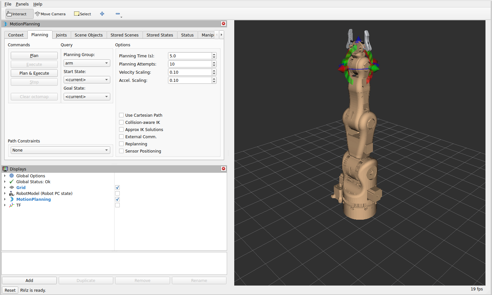

Tutorial: the whole robot in simulation¶
This tutorial is for you if you have never worked with ROS, Docker or Linux. At the end you move the SmartManipulator-X arm on your screen with the mouse, and the motion is carried out by the real software of the robot: the motion planner, the robot computer and the firmware of six motor drives. Only the motors themselves are simulated.
You need no electronics, only a computer. Every command is given in full: copy it, paste it, press Enter.
Time: about one hour the first time (mostly waiting for downloads), about five minutes every time after that.
What you will start¶
The real robot consists of three kinds of parts. In this tutorial all of them run on your computer, each in its own box (a container):
Operator PC Robot PC Six drives (doppelstep)
MoveIt 2 + RViz2 ros2_control firmware of the motor drives
"where should the arm go?" --> "move each joint like this" ---> "turn the motor"
you click here virtual DYNAMIXEL bus <------- answer: "I am here now"
| Part | On the real robot | In this tutorial |
|---|---|---|
| Operator PC | your laptop | a container with MoveIt 2 (plans motions) and RViz2 (the window you click in) |
| Robot PC | a small computer on the robot (CM4-Duino) | a container with ros2_control (turns a motion into commands for every joint) |
| Drives | six boards, one per motor | six containers, each running the unchanged drive firmware; the motor is a computer model |
Words used here¶
| Word | Meaning |
|---|---|
| Terminal | A window in which you type commands. Here always the Ubuntu terminal, never PowerShell |
| WSL | Windows Subsystem for Linux: a Linux (Ubuntu) inside Windows |
| Docker | Runs programs in containers: boxes with everything a program needs, so you install nothing else |
| Image | The template of a container. It is built (or downloaded) once, then started many times |
| Repository | A project folder with its full history, downloaded with git clone |
| ROS 2 | The robot software framework; the Operator PC and the Robot PC talk through it |
Part A: prepare your computer (once)¶
A1. Install WSL with Ubuntu¶
On Linux you can skip this step. On Windows 10 or 11:
- Right-click the Start button and open Terminal (Admin) or Windows PowerShell (Admin).
-
Type:
-
Restart the computer when asked. After the restart an Ubuntu window opens and asks for a user name and a password. Choose both and remember the password: Ubuntu asks for it when you install something. While you type it, nothing appears; that is normal.
Check it in PowerShell:
The output must contain a line WSLg version. If the command is unknown, your WSL is
too old: run wsl --update and try again.
How to open the Ubuntu terminal later
Press the Windows key, type Ubuntu and open Ubuntu 24.04. In it, paste with right-click or Ctrl+Shift+V (Ctrl+V does not work there).
A2. Install Docker Desktop¶
- Download Docker Desktop from docker.com and install it with the default settings (keep Use WSL 2 switched on).
- Start Docker Desktop. Open Settings → Resources → WSL integration, switch on Ubuntu-24.04, then Apply & restart.
-
Close the Ubuntu terminal and open a new one. Check:
The output must contain a Client part and a Server part. If it says
docker: command not found, repeat step 2.
Docker Desktop must be running whenever you use the robot software (its whale icon is in the taskbar).
A3. Download the three repositories¶
In the Ubuntu terminal:
mkdir -p ~/smx
cd ~/smx
git clone https://github.com/SystemFromScratch/sfs-doppelstep.git doppelstep
git clone https://github.com/SystemFromScratch/sfs-smartmanipulator-x-robot.git SmartManipulator-X-Robot-PC
git clone https://github.com/SystemFromScratch/sfs-smartmanipulator-x-operator.git SmartManipulator-X-Operator-PC
ls
ls must list three folders: doppelstep, SmartManipulator-X-Robot-PC and
SmartManipulator-X-Operator-PC. Keep exactly these names: the Operator PC looks for the
Robot PC folder next to it under that name.
Why in Ubuntu and not on drive C:
Folders in Ubuntu (~ is your Ubuntu home folder) are much faster for Docker than
folders on the Windows drive, and the files keep Linux line endings.
A4. Let RViz2 open its window¶
RViz2 runs inside a container and has to reach your screen. Create a small settings file for the Operator PC:
cd ~/smx/SmartManipulator-X-Operator-PC
printf 'SMX_X11_DIR=/mnt/wslg/.X11-unix\nSMX_WSLG_DIR=/mnt/wslg\n' > docker/.env
cat docker/.env
ls /mnt/wslg/.X11-unix
cat shows the two lines you wrote; the last command must show X0. This works on
Windows 10 and 11, as long as you start the Operator PC from the Ubuntu terminal.
On a Linux desktop use the X11 settings instead, described in the Operator PC documentation under GUI on a Linux desktop.
A5. Build the drive firmware¶
The drive firmware is built once with the Zephyr tools, which come in their own image. This is the longest step (several gigabytes to download):
cd ~/smx/doppelstep
docker compose build
docker compose run --rm zephyr bash scripts/west-init.sh
docker compose run --rm zephyr west build -b native_sim/native/64 -s app -d build-native
ls build-native/zephyr/zephyr.exe
Expected: the last line prints build-native/zephyr/zephyr.exe. That file is the
drive firmware as a Linux program.
The Robot PC and the Operator PC images are built automatically the first time you start them in Part B.
Part B: start the robot (every time)¶
You need four Ubuntu terminals side by side. Open them now (Windows key, Ubuntu 24.04, four times) and give each one its job:
| Terminal | Job | Stays open with a running log |
|---|---|---|
| 1 | the six drives | no, it finishes at once |
| 2 | Robot PC | yes |
| 3 | Operator PC with RViz2 | yes |
| 4 | checks | no |
B1. Terminal 1: start the six drives¶
cd ~/smx/doppelstep
for i in 1 2 3 4 5 6; do
docker compose run -d --rm --name dxl$i -p $((5554+i)):5555 zephyr \
python3 tools/sim/run_native.py run --tcp 5555 --link /tmp/ttyDXL -- --flash=/tmp/flash.bin
done
docker ps --filter name=dxl --format '{{.Names}} {{.Status}}'
Expected: six lines dxl1 … dxl6 Up …. The drives now run in the background. They
all start with the factory ID 1; the Robot PC gives each one its own ID in the next step.
If you see The container name "/dxl1" is already in use, the drives still run from
last time. That is fine: go on with B2.
B2. Terminal 2: start the Robot PC¶
cd ~/smx/SmartManipulator-X-Robot-PC
docker compose -f docker/docker-compose.yml -f docker/docker-compose.sil.yml up --build robot_pc
The first time this builds the image (10–20 minutes). Then the log scrolls. Wait for this line:
Leave the terminal open. On the way you see ten lines FastSyncRead TxRx failed
(attempt n/10): that is expected (the Robot PC tries a faster read mode once, the
simulated drives do not offer it yet, so it switches to the normal one).
B3. Terminal 4: check that the Robot PC works¶
cd ~/smx/SmartManipulator-X-Robot-PC
docker compose -f docker/docker-compose.yml run --rm probe smx_smoke_test.sh
The test moves the arm a little and back, through the drives. Expected: PASS on
the last line. If it fails, see When something goes wrong.
B4. Terminal 3: start the Operator PC¶
cd ~/smx/SmartManipulator-X-Operator-PC
docker compose -f docker/docker-compose.yml up --build operator_pc
The first time this builds the image (10–20 minutes). Wait for the line
You can start planning now!. A window RViz opens on your Windows desktop
(sometimes behind the other windows: look in the taskbar):

Part C: move the arm¶
In RViz, on the Planning tab of the MotionPlanning panel:
- Planning Group:
arm(already selected). - Goal State: open the list and choose ready. An orange arm shows where the arm should go; the grey arm is where it is now.
- Click Plan & Execute.
The arm bends forward. It moves slowly on purpose (Velocity Scaling 0.10). What happened: MoveIt planned a path without collisions, the Robot PC turned it into commands for every joint, and the six drive firmwares followed them and reported their positions back.
Now choose Goal State: home and click Plan & Execute again: the arm stands up.
Things to try next:
- Drag the coloured arrows at the gripper to set your own goal, then Plan & Execute. If the orange arm stops following, the goal is out of reach.
- Set Planning Group to
gripperand choose closed or open. (The gripper is not driven by a doppelstep drive yet; it is simulated more simply.) - All RViz features are explained in Planning in RViz2 of the Operator PC documentation.
Look at the numbers (optional)¶
In terminal 4, the joint positions the drives report, in radians:
cd ~/smx/SmartManipulator-X-Robot-PC
docker compose -f docker/docker-compose.yml run --rm probe \
bash -c 'ros2 topic echo --once /joint_states --field position'
After ready the values are close to 0, 0.5, 0.8, 0, 0.6 for j1_base … j5_wrist
(the first value is the gripper).
Part D: stop everything¶
- In terminals 3 and 2: press Ctrl+C and wait until the prompt comes back.
-
In any terminal:
Next time start again with Part B.
When something goes wrong¶
| What you see | Why | What to do |
|---|---|---|
docker: command not found in Ubuntu |
Docker Desktop is not running, or its WSL integration is off | Start Docker Desktop; step A2 |
wsl opens a window that closes at once, or errors about bash |
Windows opened the docker-desktop system instead of Ubuntu |
Open Ubuntu 24.04 from the Start menu, or once in PowerShell: wsl --set-default Ubuntu-24.04 |
Terminal 2 stays at waiting for the virtual bus … |
The drives do not run | Step B1 in terminal 1 |
Terminal 2: no drive answers on ID n |
One drive kept an old ID | docker stop dxl1 dxl2 dxl3 dxl4 dxl5 dxl6, then B1 and B2 again |
Terminal 3: network smx_net declared as external, but could not be found |
The Operator PC was started before the Robot PC | Start the Robot PC first (B2) |
Terminal 3: could not connect to display :0 |
RViz cannot reach your screen | Step A4; start terminal 3 from Ubuntu, not from PowerShell |
Address already in use |
An old container still holds its address | Part D, then start again |
| Plan & Execute ends with failed or the arm does not move | The Robot PC is not up, or a goal out of reach | Wait for gripper_controller in terminal 2; try the named goals ready and home |
| Everything is very slow | Little memory for Docker | Close other programs; Docker Desktop Settings → Resources |
What you have just run¶
- The Operator PC and the Robot PC talked over ROS 2 on a Docker network, as they will over Wi-Fi on the real robot. Code you write for the Operator PC runs on the real arm later without changes.
- The Robot PC used the same software it will use on the arm:
ros2_controlwith the ROBOTIS DYNAMIXEL hardware interface. - The drives were the real doppelstep firmware, compiled as a Linux program with a simulated motor, joined into one bus by a small tool of the Robot PC.
This setup is called SIL (software in the loop). How it is built and how to judge its log in detail: Tutorial: checking SIL step by step. How the connections of the real robot will look: Connection guide for beginners.